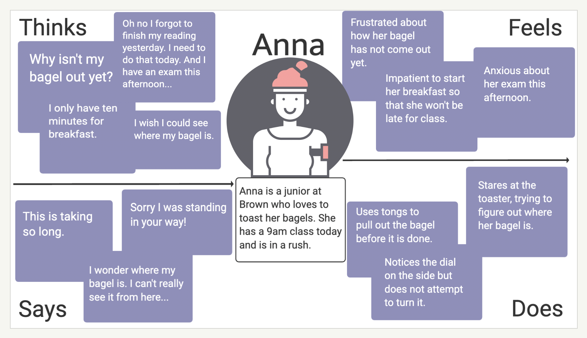

Step 3: Personas
Based on the overarching trends observed amongst the users, I created two personas.

As a regular user of the conveyor toasters, Anna is dissatisfied with the toaster speed. She is particularly annoyed that she can not visually track the location of her toast and is unable to end the toasting process early. Anna represents the group of users who are time-sensitive and care about the quality of their toast.

John represents the group of users who use the toaster without paying attention to the details of its design. He is a casual user who does not care too much about the time it takes or the quality of his toast. John does not have any particular problem with the interface.